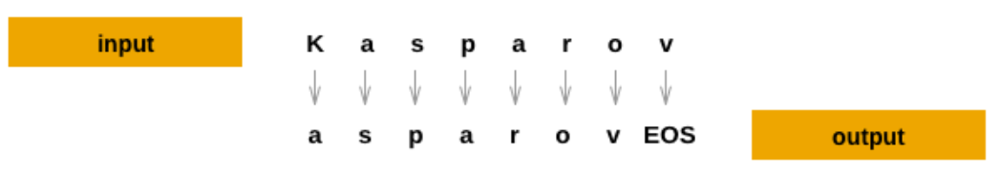

2. Small-scale ChatGPT - generování textu pomocí neuronových sítí#
Úkoly#
Seznámení s datasety - jména ČR (můž, žena, neutrál), různé státy
Vykreslit histogram délek jmen
Konstrukce rekureního modelu
vyzkoušet: různé aktivační funkce, learning rate, počet rekurentních bloků, počet skrytých neuronů
Přidání teploty - ovlivnění výstupu, jak moc si NN vymýšlí
Přidání prvního znaku - NN bude generovat sama i první znak jména
Cíl: Rozumně vypadající vygenerovaná jména.
Bonusy:
Jiný dataset - CZ jména, jiná národnost, pouze muž/žena
LSTM, GRU ?
# For tips on running notebooks in Google Colab, see
# https://pytorch.org/tutorials/beginner/colab
%matplotlib inline
!pip install -r requirements.txt
import matplotlib.pyplot as plt
import numpy as np
import torch
# Make device agnostic code
device = "cuda" if torch.cuda.is_available() else "cpu"
device
'cuda'
device = 'cpu' # Force CPU for this example
torch.device(device)
Příprava dat I#
Databáze evropských jmen a příjmení: https://data.europa.eu/data/datasets/5bc35259634f41122d982759?locale=cs
Složka: /datasets/Seznam křestních jmen a příjmení
Databáze českých jmen: https://mv.gov.cz/clanek/seznam-rodove-neutralnich-jmen.aspx
Složka /datasets/SeznamJmenCR
import glob
import pandas as pd
dfs = pd.read_csv('datasets/SeznamJmenCR/OpenData_-_Seznam_jmen_k_2025-05-31.csv', encoding='utf-8')
jmena_typ = dfs.iloc[:, 0]
jmena_all = dfs.iloc[:, 1]
jmena_all.shape
(11331,)
jmena_all, idx = np.unique(jmena_all, return_index=True)
jmena_typ = jmena_typ[idx]
jmena_all.shape, jmena_typ.shape
jmena_all[:11] # every 150th name
Vyčištění speciálních znaků
import string
jmena_all2 = []
# Set vocab to all utf-8 printable characters
vocab = list('`1234567890-=[];\',./*-+.~!@#$%^&*()_+{}:"|<>?')
names_length = []
for jmeno in jmena_all:
cleaned = ''.join([ch for ch in str(jmeno) if ch not in vocab])
first_seq = cleaned.split()[0] if cleaned.split() else ''
first_seq = first_seq.lower()
first_seq = first_seq[0].upper() + first_seq[1:]
jmena_all2.append(first_seq)
names_length.append(len(first_seq))
jmena_all2 = np.array(jmena_all2)
jmena_typ = np.array(jmena_typ)
len(jmena_all2)
# DOPLNIT: histogram (krok 2)
jmena_all2, idx = np.unique(jmena_all2, return_index=True)
jmena_typ2 = jmena_typ[idx]
jmena_all2.shape, jmena_typ2.shape
((11153,), (11153,))
positions = np.where(jmena_all2 == 'JAN **')[0]
print(positions)
[]
EOS = ‘\n’, START = ‘$’
{kind=link}
# The unique characters in the file
vocab = np.array(sorted(set(''.join(jmena_all2))))
# insert special starting character
#vocab = np.append(vocab,'$')
print(f'{len(vocab)} unique characters')
print(vocab)
Příprava na zpracování
all_letters = ''.join(vocab)
n_letters = len(all_letters) + 1 # Plus EOS marker
all_letters
names_all = jmena_all2
names_all.shape, names_all[::180]
Příprava dat II#
Databáze jmen z různých států: https://docs.pytorch.org/tutorials/intermediate/char_rnn_classification_tutorial.html
from io import open
import glob
import os
import unicodedata
import string
import numpy as np
all_letters = string.ascii_letters + " .,;'-"
n_letters = len(all_letters) + 1 # Plus EOS marker
def findFiles(path): return glob.glob(path)
# Turn a Unicode string to plain ASCII, thanks to https://stackoverflow.com/a/518232/2809427
def unicodeToAscii(s):
return ''.join(
c for c in unicodedata.normalize('NFD', s)
if unicodedata.category(c) != 'Mn'
and c in all_letters
)
# Read a file and split into lines
def readLines(filename):
with open(filename, encoding='utf-8') as some_file:
return [unicodeToAscii(line.strip()) for line in some_file]
# Build the category_lines dictionary, a list of lines per category
category_lines = {}
all_categories = []
names_all = []
names_length = []
for filename in findFiles('data/names/*.txt'):
category = os.path.splitext(os.path.basename(filename))[0]
all_categories.append(category)
lines = readLines(filename)
category_lines[category] = lines
names_all = np.concatenate([names_all, lines])
for l in lines:
names_length.append(len(l))
n_categories = len(all_categories)
print(f'Total names count: {len(names_all)}')
if n_categories == 0:
raise RuntimeError('Data not found. Make sure that you downloaded data '
'from https://download.pytorch.org/tutorial/data.zip and extract it to '
'the current directory.')
print('# categories:', n_categories, all_categories)
print(unicodeToAscii("O'Néàl"))
# DOPLNIT: histogram (krok 2)
all_letters
Konstrukce neuronové sítě#
Návod: https://docs.pytorch.org/tutorials/beginner/introyt/modelsyt_tutorial.html
import torch
import torch.nn as nn
class RNN(nn.Module):
def __init__(self, input_size, hidden_size, output_size):
super(RNN, self).__init__()
self.hidden_size = hidden_size
# DOPLNIT: inicializace vrstev
def forward(self, input, temperature = 1):
# DOPLNIT: struktura RNN
return output, self.hidden
def initHidden(self):
self.hidden = torch.zeros(1, self.hidden_size).to(device)
learning_rate = ?
n_hidden = ? # počet skrytých neuronů
rnn = RNN(n_letters, n_hidden, n_letters).to(device)
print(rnn)
from torchsummary import summary
rnn.initHidden()
summary(rnn, input_size=(1,n_letters), device=device)
Formátování textu#
Převedení na one-hot reprezentaci
For each timestep (that is, for each letter in a training word) the
inputs of the network will be (category, current letter, hidden state)
and the outputs will be (next letter, next hidden state). So for each
training set, we’ll need the category, a set of input letters, and a
set of output/target letters.
Since we are predicting the next letter from the current letter for each
timestep, the letter pairs are groups of consecutive letters from the
line - e.g. for "ABCD<EOS>" we would create (“A”, “B”), (“B”,
“C”), (“C”, “D”), (“D”, “EOS”).

The category tensor is a one-hot
tensor of size
<1 x n_categories>. When training we feed it to the network at every
timestep - this is a design choice, it could have been included as part
of initial hidden state or some other strategy.
Zpracování textu na tokeny#
# One-hot matrix of first to last letters (not including EOS) for input
def inputTensor(line, n_letters):
tensor = torch.zeros(len(line), 1, n_letters)
for li in range(len(line)):
letter = line[li]
tensor[li][0][all_letters.find(letter)] = 1
return tensor
# ``LongTensor`` of second letter to end (EOS) for target
def targetTensor(line, n_letters):
letter_indexes = [all_letters.find(line[li]) for li in range(1, len(line))]
letter_indexes.append(n_letters - 1) # EOS
return torch.LongTensor(letter_indexes)
all_letters
For convenience during training we’ll make a randomTrainingExample
function that fetches a random (category, line) pair and turns them into
the required (category, input, target) tensors.
import random
# Random item from a list
def randomChoice(l):
return l[random.randint(0, len(l) - 1)]
# Make category, input, and target tensors from a random category, line pair
def randomTrainingExample(samples_all, n_letters):
sample = randomChoice(samples_all)
input_line_tensor = inputTensor(sample, n_letters)
target_line_tensor = targetTensor(sample, n_letters)
return input_line_tensor, target_line_tensor
Trénování neuronové sítě#
criterion = nn.NLLLoss().to(device)
def train(input_line_tensor, target_line_tensor):
target_line_tensor = target_line_tensor.unsqueeze_(-1).to(device)
rnn.initHidden()
rnn.zero_grad()
loss = torch.Tensor([0]).to(device) # you can also just simply use ``loss = 0``
for i in range(input_line_tensor.size(0)):
output, _ = rnn(input_line_tensor[i].to(device))
l = criterion(output, target_line_tensor[i])
loss += l
loss.backward()
for p in rnn.parameters():
p.data.add_(p.grad.data, alpha=-learning_rate)
return output, loss.item() / input_line_tensor.size(0)
To keep track of how long training takes I am adding a
timeSince(timestamp) function which returns a human readable string:
import time
import math
def timeSince(since):
now = time.time()
s = now - since
m = math.floor(s / 60)
s -= m * 60
return '%dm %ds' % (m, s)
Training is business as usual - call train a bunch of times and wait a
few minutes, printing the current time and loss every print_every
examples, and keeping store of an average loss per plot_every examples
in all_losses for plotting later.
rnn = RNN(n_letters, n_hidden, n_letters).to(device)
n_iters = ?
print_every = ?
plot_every = 500
all_losses = []
total_loss = 0 # Reset every ``plot_every`` ``iters``
total_loss2 = 0 # Reset every ``print_every`` ``iters``
start = time.time()
for iter in range(1, n_iters + 1):
output, loss = train(*randomTrainingExample(names_all, n_letters))
total_loss += loss
total_loss2 += loss
if iter % print_every == 0:
print('%s (%d %d%%) %.4f' % (timeSince(start), iter, iter / n_iters * 100, total_loss2 / print_every))
total_loss2 = 0
if iter % plot_every == 0:
all_losses.append(total_loss / plot_every)
total_loss = 0
Plotting the Losses#
Plotting the historical loss from all_losses shows the network learning:
import matplotlib.pyplot as plt
plt.figure()
plt.plot(all_losses);
import datetime
dt = datetime.datetime.now().strftime('%Y%m%d%H%M%S')
print(dt)
import os
os.makedirs('results', exist_ok=True)
torch.save(rnn.state_dict(), f'results/model2_jmena_rnn_{dt}.pth')
rnn = RNN(n_letters, n_hidden, n_letters).to(device)
rnn.load_state_dict(torch.load('results/model2_jmena_rnn_20250623032853.pth'))
Vzorkování natrénováné RNN#
To sample we give the network a letter and ask what the next one is, feed that in as the next letter, and repeat until the EOS token.
Create tensors for input category, starting letter, and empty hidden state
Create a string
output_namewith the starting letterUp to a maximum output length,
Feed the current letter to the network
Get the next letter from highest output, and next hidden state
If the letter is EOS, stop here
If a regular letter, add to
output_nameand continue
Return the final name
max_length = 20
# Sample from a category and starting letter
def sample(start_letter='A', temperature=1):
with torch.no_grad(): # no need to track history in sampling
input = inputTensor(start_letter, n_letters)
rnn.initHidden()
output_name = start_letter
for i in range(max_length):
#print(torch.exp(output.squeeze()))
if temperature != 'max': # sample from distribution
output, _ = rnn(input[0].to(device), temperature=temperature)
a = torch.arange(n_letters).to(device)
p = torch.exp(output.squeeze()) # temperature
index = p.multinomial(num_samples=1, replacement=True)
topi = a[index]
else: # max
output, _ = rnn(input[0].to(device), temperature=1)
topv, topi = output.topk(1)
topi = topi[0][0]
if topi == n_letters - 1:
break
else:
letter = all_letters[topi]
output_name += letter
input = inputTensor(letter, n_letters)
return output_name
# Get multiple samples from one category and multiple starting letters
def samples(start_letters='ABC', temperature=1):
for start_letter in start_letters:
sample_name = sample(start_letter, temperature)
print(f'{sample_name}{' '*(22-len(sample_name))}| je v datasetu: ', sample_name in names_all)
#samples('ADJLHOLAD', temperature = 'max')
samples('ADJLHOLAD', temperature = 0.3)
Vizualizace#
!pip install torchview
from torchviz import make_dot
import os
os.environ["PATH"] += os.pathsep + 'C:/Program Files/Graphviz/bin/'
y_pred = rnn(inputTensor('A', n_letters)[0].to(device)) # Get predictions for the first training sample
make_dot(y_pred, params=dict(list(rnn.named_parameters()))).render("rnn_torchviz", format="png")
'rnn_torchviz.png'
import torchvision
from torchview import draw_graph
rnn.initHidden()
model_graph = draw_graph(rnn, input_size=(n_hidden,n_letters), expand_nested=True, device=device)
model_graph.visual_graph
Zdroje#
https://docs.pytorch.org/tutorials/intermediate/char_rnn_classification_tutorial.html
https://www.tensorflow.org/text/tutorials/text_generation